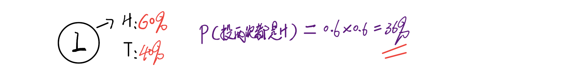
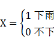
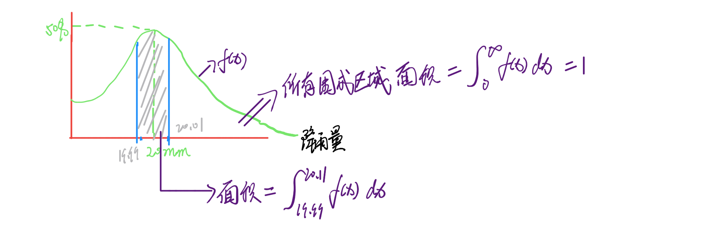
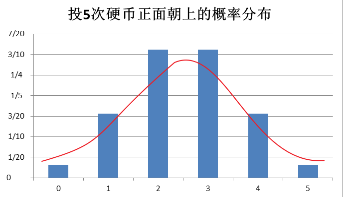

概率这个词可以说在我们的生活中经常的出现也是经常的用到，一些简单的概率普通人都可以很快的理解和应用，举一点简单的例子比如抛硬币，得到正面或是反面的概率我们说是50%，再摇一个色子，得到6的概率是1/6，得到奇数的概率是50%。那么如果我们把问题变得复杂一点，同时投掷五个非均匀硬币(得到正面的可能性更高达到70%)至少出现两枚正面的概率是多少？连续摇一个色子五次，得到的点数总和等于20的概率是多少？类似这样的概率问题答案就不是那么一目了然了，我们需要用到一些数学计算，所以今天就和大家一起来学习一些概率知识。
我们描述一个事件发生的概率，通俗的理解就是用这个事件发生的数量去除以所有可能性发生的数量，比如上面扔色子的例子，我们把扔一次色子得到6看作一个事件，这个发生了一次，所有可能发生的数量是6，所以用1除以6得到概率是1/6。从百度百科查到了下面这些更加严谨的概率定义，可以更全面的了解一下，假如不是很明白里面的一些数学符号也没有关系。
古典定义
如果一个试验满足两条：
（1）试验只有有限个基本结果；
（2）试验的每个基本结果出现的可能性是一样的。
这样的试验便是古典试验。
对于古典试验中的事件A，它的概率定义为：P（A）=m/n，其中n表示该试验中所有可能出现的基本结果的总数目。m表示事件A包含的试验基本结果数。 这种定义概率的方法称为概率的古典定义。
频率定义
随着人们遇到问题的复杂程度的增加，等可能性逐渐暴露出它的弱点，特别是对于同一事件，可以从不同的等可能性角度算出不同的概率，从而产生了种种悖论。另一方面，随着经验的积累，人们逐渐认识到，在做大量重复试验时，随着试验次数的增加，一个事件出现的频率，总在一个固定数的附近摆动，显示一定的稳定性。R.von米泽斯把这个固定数定义为该事件的概率，这就是概率的频率定义。从理论上讲，概率的频率定义是不够严谨的。
统计定义
在一定条件下，重复做n次试验，nA为n次试验中事件A发生的次数，如果随着n逐渐增大，频率nA/n逐渐稳定在某一数值p附近，则数值p称为事件A在该条件下发生的概率，记做P（A）=p。这个定义成为概率的统计定义。
在历史上，第一个对“当试验次数n逐渐增大，频率nA稳定在其概率p上”这一论断给以严格的意义和数学证明的是雅各布·伯努利（Jacob Bernoulli）。
从概率的统计定义可以看到，数值p就是在该条件下刻画事件A发生可能性大小的一个数量指标。
由于频率nA/n总是介于0和1之间，从概率的统计定义可知，对任意事件A，皆有0≤P（A）≤1，P(Ω)=1，P（Φ）=0。其中Ω、Φ分别表示必然事件（在一定条件下必然发生的事件）和不可能事件（在一定条件下必然不发生的事件）。
公理化定义
柯尔莫哥洛夫于1933年给出了概率的公理化定义，如下：
设E是随机试验，S是它的样本空间。对于E的每一事件A赋于一个实数，记为P(A)，称为事件A的概率。这里P(·)是一个集合函数，P（·）要满足下列条件：
（1）非负性：对于每一个事件A，有P(A)≥0;
（2）规范性：对于必然事件Ω，有P(Ω)=1;
（3）可列可加性：设A1，A2……是两两互不相容的事件，即对于i≠j，Ai∩Aj=φ，（i,j=1,2……），则有P（A1∪A2∪……）=P（A1）+P（A2）+……
或许会被这些定义搞糊涂了，接下来，我们通过一些简单的实例，来学习一般独立事件或是相依事件的概率的计算方法，这些例子的来源都是可汗公开课中概率课程，解题过程也是和可汗公开课一样用手绘的形式，字写得比较难看还请见谅，其中用到最多的表达方式P(事件)指的就是某事件发生的概率。
例1： 一个袋子里装有三个黄色弹珠，两个红色弹珠，两个绿色弹珠和一个蓝色弹珠，问：从袋子里取出一个黄色弹珠的概率是多少
例2：一幅标准的扑克牌，我们除去大小王，那么剩下52张牌，四个花色，问：从中抽一张牌是J或是红桃的概率是多少？
例3：一个袋子里装有8个绿色的方块，9个红色的球，5个黄色的方块，7个黄色的球，摇动袋子后，从中倒出一个，问：倒出的是黄色的或是方块的概率是多少？
例4：投掷一枚均匀的硬币三次，问：得到的结果是（正面，反面，正面）的概率是多少？
例5：一个袋子里有9个绿球，2个蓝球，3个红球，问：取出一个球不是蓝球的概率是多少？
例6：从以下数字中随机选择一个（32，49，55，30，56，28，50，40，40，45，3，25），问：能被5整除的概率是多少？
例7：某个圆的周长是36π，在这个圆内有一个周长为16π的小圆，问：从大圆中随机选择一个点，这个点落在小圆里的概率是多少？
例8：有两单项选择题，第一题有四个选项，第二题有三个选项，问：两道题都做对的概率是多少？
例9：投掷三次色子，问：得到结果都是偶数的概率是多少？
例10：投掷三枚硬币，问：得到两个正面的概率是多少？至少一次正面朝上的概率是多少?
例11：已知一个不均匀硬币，得到正面的概率为60%，问：投掷两次都是正面的概率是多少？

以上的这些例子有一个共同点，就是事件之间是相互独立没有影响的，例如抛硬币的例子，不管是抛几次都不会受到之前结果或之后结果的影响，这样的事件叫作独立事件，下面我们再来看一些事件之间是有影响的例子，这样的事件叫作相依事件。
例12：一个有九个人的俱乐部要先出三个人组成董事会，分别是主席，副主席和秘书长，选择是随机的，问：甲当选为主席，乙当选为副主席，丙当选为秘书长的概率是多少？
例13：一幅有36张牌的扑克牌，四种花色，A到9的数字，问：每次从中抽9张牌，抽到四个A的概率是多少？
例14：投掷一个硬币四次，问：恰好得到一次正面朝上的概率是多少？恰好两次呢？
例15：投掷五次硬币，问：得到三次正面朝上的概率是多少？投n次硬币得到k次正面朝上的概率是多少？
例16：投掷两个色子，问：得到7点的概率是多少？
上面这些例子中事件的发生都没有设定前提条件，接下来我们看一些更复杂也更有趣的例子，来学习在给定一定的条件下求某一事件的概率是怎么计算的？这样的例子我们称之为条件概率。
例17：袋子中有9枚普通硬币和1枚两面都是正面的硬币，问：随机选出一枚连续抛5次，得到全是正面的概率是多少？

例18：袋子中有9枚硬币，其中3枚是非均匀硬币抛掷它们有60%的概率得到正面，问：从袋子中随机选择一个硬币，抛两次都是正面的概率是多少？
根据上面两个例子的求解过程，我们用到了一种决策树的方法，在求解最终概率时，我们会将树的同一条枝叶上的概率相乘，再将不同枝叶的结果相加。那么我们可以明显的发现，同一枝叶上的概率相乘的时候其实是不分先后的，比如发生事件A的概率是P(A)，发生事件A的前提下发生事件B的概率是我们写作P(B|A)，中间的竖线“|”我们可以理解为“当…时”，那么P(B|A)可以理解为当A发生时B发生的概率，于是我们得到A和B同时发生的概率就是：P(B|A)P(A)，由于乘积是不分先后的，那么这个结果应该和当B发生的前提下A发生的概率相同，同样的我们把当B发生时A发生的概率记作：P(A|B)P(B)，最后我们得出：：
P(B|A)P(A)=P(A|B)P(B)
进一步整理这个公式可以得到：
P(B|A)=P(A|B)P(B)/P(A)
这就是著名的贝叶斯定律，这个公式在求条件概率时非常有用，因为有时候给定条件A求条件B的概率并不容易，但是给定条件B求条件A的概率相对简单的时候就可以应用贝叶斯定律来求解。下面我们来看一个例子：
例19：袋子中有9枚普通硬币和1枚两面都是正面的硬币，随机选出一枚连续抛5次，问：如果这5次都是正面，那么选中那枚两面都是正面的硬币的概率是多少？
我们发现在上面的一些例子中，经常会用到一些事件中选择出某些特定事件的情况，这些情况其实可以用更一般的方法来概括，这个方法就是排列和组合，下面我们就通过几个简单的实例来了解一下排列组合的相关知识。
例20： 有三把椅子，每个椅子可以坐一个人，问：七个人有几种坐法？n个人坐到k张椅子上有几种坐法？
通过这个例子我们得到了排列的计算公式：
例21：如果不考虑顺序，那么排列问题就变成了组合问题，以上例子不考虑座位的顺序有几种坐法？n个人坐到k张椅子上不考虑座位顺序有几种坐法？
通过这个例子我们得到了组合的计算公式：
可见组合和排列的区别就在于最终事件是否有序，如果有序就是排列如果无序就是组合。下面我们再通过几个例子来熟悉一下排列和组合的计算。
例22：从蓝、黄、白，红、橙、绿中选择不同的四种颜色作为一种四位的颜色编码，有几种选择方式？
例23：一个俱乐部要从9个人中选出董事会成员分别担任主席，副主席和秘书长，问有几种选择方式？
例24：一幅有36张牌的扑克牌，四种花色，1到9的数字，问从中随机选择9张牌，一共有几种不同的组合方式？
最后我们综合应用以上所有的知识，包括独立事件，相依事件，条件概率，排列组合及贝叶斯定律来进行一些相对复杂概率事件的求解。
例25：从1到60中选择四个数字，正好选中3,15,46,49的概率是多少？
例26：有两个不定项选择题，第一题有四个选项，第二题有三个选项，问：两道题都做对的概率是多少？
例27：抛8次均匀的硬币，得到三次正面的概率是多少？
例28：假设罚球的命中率是80%，问：罚球5次至少投中3次的概率是多少？
例29：买一注双色球，红球从1到33中选择，蓝球从1到16中选择，选六个红球一个蓝球，中一等奖的概率是多少？
例30：假设一个袋子中有5枚均匀硬币和10枚非均匀硬币(得到正面的概率为80%)，从中随机取出一枚硬币，抛掷6次，得到4次正面，问：取出的是均匀硬币的概率是多少？
例31：一个班级中有30名同学，问：至少有两人是同一天生日的概率是多少？
到此为止我们基本上学会了一些简单概率的计算方法，下面将要进一步深入介绍有关随机变量，连续随机变量，离散随机变量，概率分布，概率密度函数，二项分布，正态分布和泊松分布的知识。
随机变量，光从字面上就不是很容易理解，平时我们将一些方程中的未知数称为变量，比如对于方程 x+3=7，我们称x为变量，或者再有y=3x+2，我们称x和y都是变量，这些变量在给定一定的输入的情况下我们都可以求得一个值，如第一个例子x=4，而第二个例子y就会随着x的变化而发生变化。那么随机变量就是一个可以和常规变量一样有固定的取值，或是可以取多个值，但是我们又不需要把它求解出来的变量，我们用大写的X表示，随机变量实际上就是一个函数，它的作用是可以把一些随机件通过数学的方法表达出来。比如明天是否会下雨，我们就可以这样定义：

再比如我们可以定义随机变量来表示投硬币时是否正面朝上：

随机变量有两种，一种是离散的，随机变量的可能结果数量是有限的，一种是连续的，随机变量的可能结果是无限的，例如上面两个例子都是离散的，得到的结果不是0就是1，假如我们把下雨的例子换一种说法，定义随机变量为明天的下雨量是多少，那么这相结果就是个连续的。
之所以需要区分离散型和连续型随机变量是因为他们的概率分布是不一样的。假设我们定义随机变量X为投色子后得到的点数，那么我们将它的概率分布画成图形是如下形式，每一个点数得到的概率都是1/6：
假如这个色子很有特点，没有2点而有两个6点，那么我们得到的概率分布就变成了：
根据这个分布图我们要求投掷结果大于等于5的概率即P(X>=5)，就只需要将P(5)+P(6)=1/6+2/6=1/2就可以了。
接着来看连续型的随机变量，假设我们定义随机变量X为明天的降雨量，那么得到的概率分布图形可能是下面这样子的：
我们将表示这个图形的函数f(x)就叫作概率密度函数。如果我们要求明天降雨量正好是20mm的概率是多少？是50%吗？答案是否定的，因为明天的降雨量是不可能正正好好是20mm一个水分子不多一个水分子不少的，所以我们平常所说的明天降雨量是20mm指的应该指的是实际降雨量减去20mm少于某个可以接受的误差值，比如0.01mm，用数学的方法表示就是|X-20|<0.01，所以我们想要求的降雨量为20mm的意思就是求P(|x-20|<0.01)，如下图我们用两个点之间的间隔和f(x)之间围成的面积就应该是我们要求的概率，而这个面积就是函数f(x)从1.99到2.01的定积分，可以进一步理解单纯对一点20来说，面积是0，也就是概率是0，这和我们上面的结论正好是说的通的，而所有事件发生的概率也就是降雨量是0到无穷大的概率就是将f(x)从0积到∞，得到的应该是1，即所有事件的概率之和不会超过100%。

下面我们来学习三个非常有用也是非常常见的概率分布，二项分布，正态分布和泊松分布。
先来看个例子，将一枚硬币抛五次，定义随机变量X为正面朝上的次数，我们来计算一下X为0，1，2，3，4，5的概率并画出概率分布图。 根据前面所学的概率计算知识，我们得到：

我们把类似这样的分布叫作二项分布 。
一般地，在n次独立重复试验中，用ξ表示事件A发生的次数，如果事件发生的概率是p,则不发生的概率 q=1-p，N次独立重复试验中发生K次的概率是： 那么就说ξ服从二项分布，其中P称为成功概率，特别的当n=1即只进行一次实验的时候，我们得到的结果只有两种可能非0即1，这种情况我们称之为两点分布又称伯努利分布。
在上面这个抛硬币的例子中正好发生的概率p和q是相等的正好是50%，再举一个概率是不同的例子，假设投篮的命中率是70%，那么投6次，定义随机变量X为投中的次数，那么我们来计算一下X分别为0，1，2，3，4，5，6的概率并画出概率分布图。根据二项分布的公式，我们的p=0.7, q=0.3，于是我们得到：
在Excel中进一步计算并绘制概率分布图我们得到如下结果：
如果进一步扩展上述两个二项分布，假使其结果不是有限个而是无限多个，我们就可以得到一个类似钟形的曲线，这种分布就是正态分布，如下图是将上面的投篮次数改为100后的结果，可以看出输出的概率分布图形已经非常接近于钟形曲线了：
正态分布的标准定义是这样的：
若随机变量X服从一个位置参数为μ、尺度参数为σ的概率分布，且其概率密度函数为：

则这个随机变量就称为正态随机变量，正态随机变量服从的分布就称为正态分布，记作
当μ=0，σ=1时，正态分布就成为标准正态分布：

正态分布的概率密度函数曲线呈钟形，因此人们又经常称之为钟形曲线。正态曲线呈钟型，两头低，中间高，左右对称，曲线与横轴间的面积总等于1。
在最后介绍泊松分布之前我们先讲一个概念叫期望值。在概率论和统计学中，期望值（或数学期望、或均值，亦简称期望，物理学中称为期待值）是指在一个离散性随机变量试验中每次可能结果的概率乘以其结果的总和。比如统计学中我们求3，3，3，4，5这五个数的均值的计算方法为(3+3+3+4+5)/5=18/5，我们用概率的方法表示，其中3出现了3次，4和5出现了一次，则根据定义期望值等于概率乘以结果，(3/5)x3+(1/5)x4+（1/5)x5=18/5，结果是一样的，但是这两种方法的最大区别在于前者需要知识总共有多少个结果，而后者在知道每个结果发生的概率的前提下并不需要知道总共有多少个结果。而对于服从二项分布的事件，其期望值E(X)–通常用E(X)表示期望值等于试验的次数n乘以试验成功的概率p，即E(X)=np。下面简单的演算一下推导过程。
下面我们来介绍怎么样从二项分布推导出泊松分布。
假如现在需要你计算某段时间内街上某点通过的汽车数量，有一个比较靠谱的方法就是定义一个随机变量X为这段时间内通过的汽车数量，假设这段时间为一个小时，我们只要能够求出X的概率分布，那么就可以接下来计算出这段时间有100辆车通过的概率或者只有5辆车通过的概率了。在此我们先作两个简单的假设，假设取样的一个小时和全天24小时的车流量是一样的，显然实际生活中或许不一样，但是这里为了学习方便先作这样的假设，再假设每个小时的车流量并不受其它时间段的影响，那么我们就可以得到一个平均的值作为每小时车流量的期望值，记作λ，即我们有E(X)=λ。具体到每一个很小的时间，我们只有可能得到两个结果要么有车通过要么没有车通过，所以可以将其看作一个服从二项分布的实验，而之前我们已经知道二项分布的期望值等于试验次数乘以成功的概率，那么假如我们把每分钟看作有车或没车的时间段，就可以到到λ=60xp，p=λ/60，那么假如有辆车通过的概率P(X=k)根据二项分布的公式可以写成：
实际上利用每分钟作为判断有点太粗糙了，可以进一步精确到以每秒有没有车通过作为每一次试验的结果:
这样一直细分下去，当分得的时间间隔接近无限小时，即上述两个公式中60和3600的位置接近无限大时，我们就会得到泊松分布，我们来作个简单的数学推导。
于是我们得到了泊松分布的概率函数：
泊松分布的参数λ是单位时间(或单位面积)内随机事件的平均发生率。 泊松分布适合于描述单位时间内随机事件发生的次数。
总结：
以上这些内容是我花了一个星期左右业余时间学习概率基础和知识总结，从概率的基本定义开始，选取了一些基本的独立事件和相依事件的概率计算例题进行演示，之后进一步介绍了条件概率的计算方法并重点介绍了贝叶斯定律及其使用实例，随后引入了排列组合的计算公式来为复杂概率的计算提供数学支持，根据这一系列的知识我们列举了一些需要综合运用这些知识进行概率计算的例题。在熟悉了基本概率的计算方法后，深入的介绍了有关随机变量，概率分布，概率密度函数，二项分布，正态分布和泊松分布的知识。这一系列内容由浅入深，循序渐进，学习完之后算是对概率论基础有了一个比较清晰的认识，对之前机器学习过程中所遇到的一些似懂非懂的概率推导也有了一点的指导作用，接下来的计划是再学习一遍线性代数基础，并以同样的方式进行学习总结和交流。